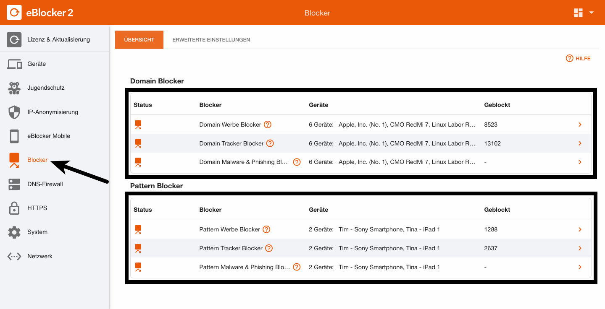
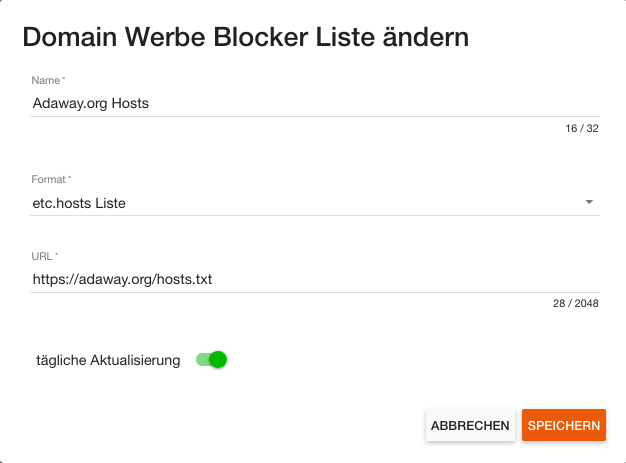

eBlocker Help > FAQs > Blocker
Um eine Blockliste hoch zu laden klicken Sie in den eBlocker Einstellungen auf das Menü Blocker.

In der Übersicht der Domain oder Pattern Blocker klicken Sie nun einen der drei Punkte (Werbe, Tracker, Malware & Phishing) an.
Auf der folgenden Seite klicken Sie bitte auf den Button HINZUFÜGEN.
In dem folgenden Diaglog können Sie der Blockliste einen Namen vergeben, das Format der Liste auswählen , die URL (Webadresse) der Liste eingeben und können gegebenenfalls den Schalter für „tägliche Aktualisierung“ aktivieren.

Nach einem Klick auf den Button SPEICHERN wird der eBlocker im Anschluss diese Liste erst herunterladen und dann importieren. Der Import einer Liste kann, je nach Länge der Liste, einige Sekunden benötigen.
Wichtig:
Beachten Sie beim Hochladen der Listen bitte deren Funktion. Nur wenn Sie zum Beispiel Domain Werbe Blocker Listen bei den Domain Werbe Blocker hochladen, so werden im Anschluss auch die richtigen Statistiken im eBlocker ausgewertet. Falls Sie nicht darauf achten, so werden gegebenenfalls bei den Domain Werbe Blocker die Tracker Blocker mitgezählt.